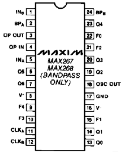
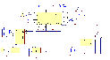
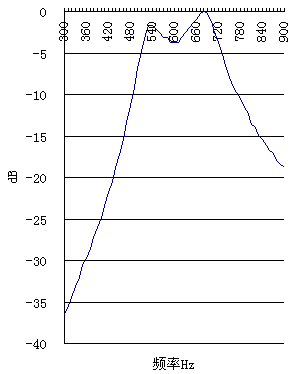

对于一位CW爱好者来说，窄带滤波器是最重要的武器之一。如果收发信机上没有装中频窄带滤波器，一个外接的音频滤波器就成了唯一的选择。传统的使用LC回路或运放的模拟滤波器，最大的问题是带宽不容易做到很窄，带宽窄的时候很容易出现铃声效应。而且用运放做的滤波器对元件参数的要求也较严格。另外模拟滤波器的边沿不够陡，用起来总觉得差了一点点。
最新的技术当然是用DSP，可以用专门的DSP芯片制作滤波器，也可以用计算机软件，利用声卡来实现DSP滤波。可是DSP芯片的开发工具很贵，业余玩不起；用计算机，又总觉得不灵活。
在模拟滤波器和DSP中间，还有一个选择，就是开关电容滤波器（SCF）。
Maxim公司的MAX267是Maxim众多SCF芯片中较简洁的一种。它内部包含两个二阶的SCF和一个运放。两个SCF已经固定成带通型，并且使用相同的Q参数和频率变换比例，这样就大大减少了外围电路，非常适合于简单的应用场合。把两个SCF级联起来，就可以实现一个四阶的SCF滤波器。通过选择适当的反馈电阻和Q参数，能够组成不同波纹率的Butterworth或Chebyshev滤波器。

本文给出的电路图，是一个3.0dB波纹的Chebyshev滤波器，中心频率600Hz，带宽200Hz。频率源是3MHz晶振经多次分频后得到。使用晶振做音频滤波器的频率控制是奢侈了一点，不过对于业余制作而言反而是简单了。即使没有频率计，只要计算正确，一定可以做出满意的滤波器来。如果用555等芯片做频率源，校准频率并保持不变化可不是一件容易的活。
如果想试一下其它的带宽，下表给出了600Hz中心频率下常用带宽的元件数值。
| 带宽 | R6 | R2 | Q6-Q0 |
| 200Hz | 150k | 127k | 1111001 |
| 250Hz | 95k | 81k | 1110111 |
| 500Hz | 24k | 20k | 1101111 |
这三种带宽都是我实际做过的。比200Hz还要窄怎么样？我试过150Hz，发现并不好，居然也有铃声效应。如果想改变中心频率，由于不同的中心频率下，相同带宽的Q值不同，所以整个表还要重新计算，不是简单地改变分频比就可以改变中心频率。具体设计请参考MAX267的芯片手册。本来这个滤波器的第一版本，是做了一个750Hz中心频率，250Hz、500Hz、1400Hz三种带宽可切换的，这样就可以兼顾CW和SSB。只是电路上颇烦琐，Q0-Q6要通过二极管矩阵来切换。如果要做频率、带宽可变化的，最好是使用其他的SCF芯片。
下表是全部的元件表：
| C1 |
20p
|
C11 |
0.1m
|
J3 |
CON2
|
U1 |
MAX267
|
| C2 |
20p
|
C12 |
0.1m
|
R1 |
1M
|
U2 |
CD4060
|
| C3 |
2.5p
|
C13 |
0.1m
|
R2 |
127k
|
U3 |
MC78L05CP
|
| C4 |
4.7m
|
C14 |
0.1m
|
R3 |
10k
|
U4 |
LM386
|
| C5 |
4.7m
|
C15 |
100m
|
R4 |
10k
|
U5 |
LM7812CT
|
| C6 |
0.1m
|
C16 |
100m
|
R5 |
10k
|
W1 |
10k
|
| C7 |
0.1m
|
C17 |
10n
|
R6 |
150k
|
Y1 |
3MHz
|
| C8 |
1m
|
C18 |
1n
|
R7 |
4k7
|
||
| C9 |
0.47m
|
J1 |
CON2
|
R8 |
4k7
|
||
| C10 |
0.47m
|
J2 |
CON3
|
R9 |
10W
|
线路本身很简单，我自己制作的时候甚至没有制作PCB，而是用实验板，一种所有的焊盘都独立的实验板。设计PCB时就按照要用实验板来搭的方式设计，所有的元件都分布在2.5mm(100mil)间距的位置上，走线也比较疏。这样就很容易可以用剪下的元件脚在底面搭一个PCB出来。MAX267是窄的24脚DIP，可以用一个16脚和一个8脚的插座拼成一个窄24脚DIP插座。PCB和面板之间用CH2.5插座连接，不直接焊在板子上。整个板子装在一个65? 35? 100mm的塑料盒子里，加上电源插座、输入输出插座，和一个电源开关，就可以了。这里电源开关要兼做音频通路开关，关闭电源的时候，把输入直接接到输出去。
从用综合测试仪分析的频谱图来看，基本上符合期望的结果。
用这个滤波器最大的收获，倒不是原先打算的从几个贴得很近的信号中分离出需要的信号。最大的用处，是在DX信号微弱时，从天电噪声中提升CW信号。
{kind=link}